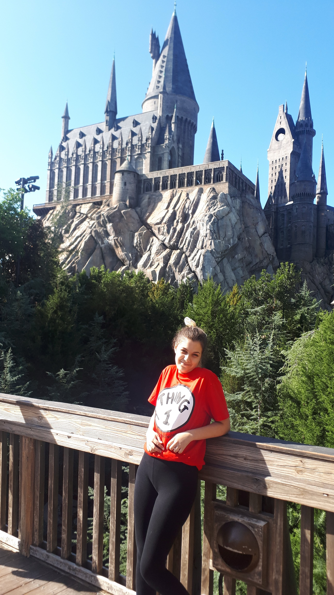

Conoceme un poquito más

Soy Martu — tu ayuda en tu viaje soñado
Desde chica siempre tuve una conexión especial con los viajes: la emoción de preparar cada detalle, la adrenalina de descubrir lugares nuevos y la magia que aparece cuando un destino te sorprende más de lo que imaginabas. Con el tiempo entendí que no solo amaba viajar, sino que también disfrutaba profundamente de ayudar a otros a vivir esa misma ilusión.
Hoy soy especialista certificada en Disney, Universal, cruceros de Disney Cruise Line y Royal Caribbean, y me dedico con toda mi pasión a acompañar a familias, parejas, grupos a que vivan una experiencia única, personalizada y sin estrés.
Para mí planear un viaje no es completar pasos: es escuchar, entender los sueños de cada persona y transformarlos en algo real. Me encanta armar itinerarios detallados, buscar los mejores tips, organizar tiempos, optimizar días y crear experiencias que realmente dejen recuerdos inolvidables.
Gracias por confiar en mí para acompañarte en esta aventura.
Si lo soñás, lo podemos planear juntos.